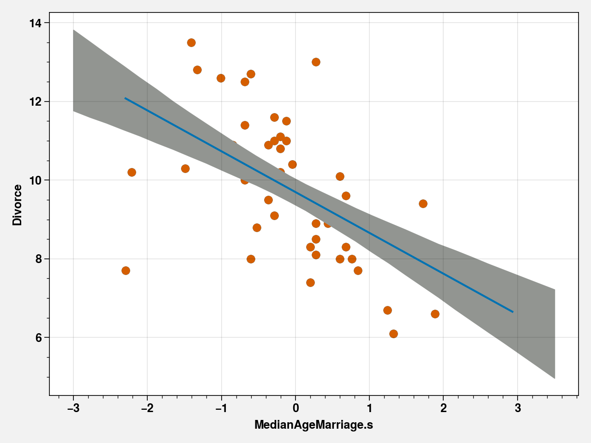
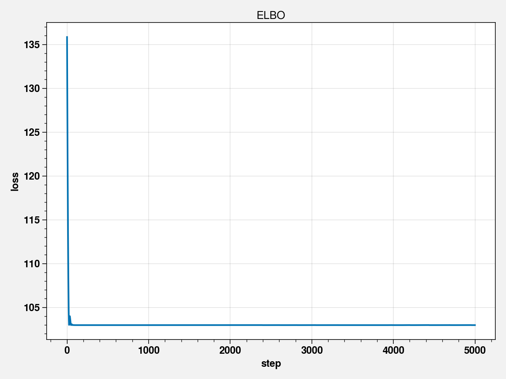
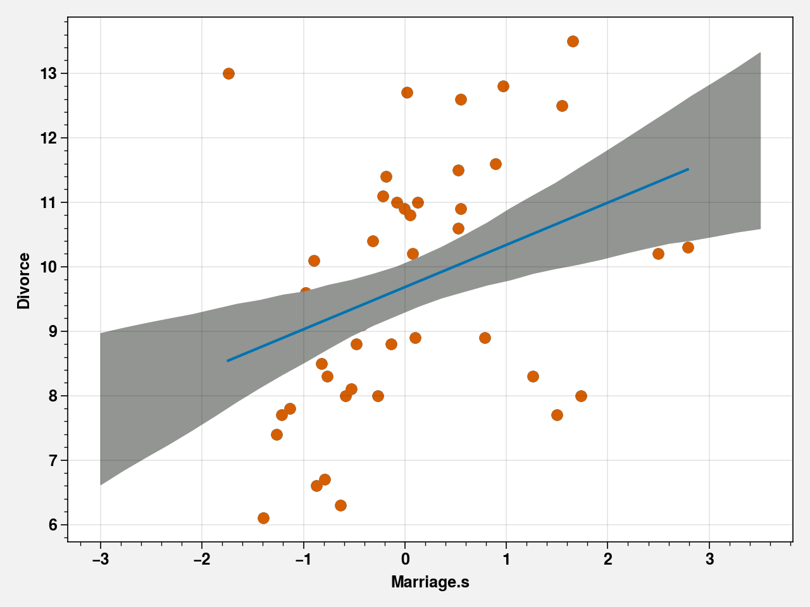
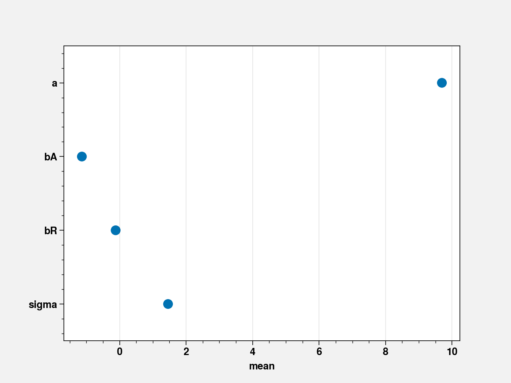

<!DOCTYPE html>

<html xmlns="http://www.w3.org/1999/xhtml">
  <head>
    <meta charset="utf-8" />
    <title>Chapter 05 - Multivariate Linear Models &#8212; Statistical Rethinking in Pyro</title>
    <link rel="stylesheet" href="https://cdnjs.cloudflare.com/ajax/libs/font-awesome/5.11.2/css/all.min.css" integrity="sha384-KA6wR/X5RY4zFAHpv/CnoG2UW1uogYfdnP67Uv7eULvTveboZJg0qUpmJZb5VqzN" crossorigin="anonymous">
    <link href="../_static/css/index.css" rel="stylesheet">
    <link rel="stylesheet" href="../_static/sphinx-book-theme.css" type="text/css" />
    <link rel="stylesheet" href="../_static/pygments.css" type="text/css" />
    <link rel="stylesheet" type="text/css" href="../_static/togglebutton.css" />
    <link rel="stylesheet" type="text/css" href="../_static/copybutton.css" />
    <link rel="stylesheet" type="text/css" href="../_static/mystnb.css" />
    <link rel="stylesheet" type="text/css" href="../_static/jupyter-sphinx.css" />
    <script id="documentation_options" data-url_root="../" src="../_static/documentation_options.js"></script>
    <script src="../_static/sphinx-book-theme.js"></script>
    <script src="../_static/jquery.js"></script>
    <script src="../_static/underscore.js"></script>
    <script src="../_static/doctools.js"></script>
    <script src="../_static/language_data.js"></script>
    <script src="../_static/togglebutton.js"></script>
    <script src="../_static/clipboard.min.js"></script>
    <script src="../_static/copybutton.js"></script>
    <script src="../_static/mystnb.js"></script>
    <script src="../_static/sphinx-book-theme.js"></script>
    <script >var togglebuttonSelector = '.toggle, .admonition.dropdown, .tag_hide_input div.cell_input, .tag_hide-input div.cell_input, .tag_hide_output div.cell_output, .tag_hide-output div.cell_output, .tag_hide_cell.cell, .tag_hide-cell.cell';</script>
    <script src="https://cdnjs.cloudflare.com/ajax/libs/require.js/2.3.4/require.min.js"></script>
    <script src="https://unpkg.com/@jupyter-widgets/html-manager@^0.18.0/dist/embed-amd.js"></script>
    <link rel="index" title="Index" href="../genindex.html" />
    <link rel="search" title="Search" href="../search.html" />

    <meta name="viewport" content="width=device-width, initial-scale=1">
    <meta name="docsearch:language" content="en">


  </head>
  <body data-spy="scroll" data-target="#bd-toc-nav" data-offset="80">
    

    <div class="container-xl">
      <div class="row">
          
<div class="col-12 col-md-3 bd-sidebar site-navigation show" id="site-navigation">
    
        <div class="navbar-brand-box">
<a class="navbar-brand text-wrap" href="../index.html">
  
  
  <h1 class="site-logo" id="site-title">Statistical Rethinking in Pyro</h1>
  
</a>
</div>

<form class="bd-search d-flex align-items-center" action="../search.html" method="get">
  <i class="icon fas fa-search"></i>
  <input type="search" class="form-control" name="q" id="search-input" placeholder="Search this book..." aria-label="Search this book..." autocomplete="off" >
</form>

<nav class="bd-links" id="bd-docs-nav" aria-label="Main navigation">
  
  <ul class="nav sidenav_l1">
  <li class="">
    <a href="../intro.html">Statistical Rethinking with Pyro</a>
  </li>
  <li class="">
    <a href="02_Chapter02.html">Chapter 02 - Small Worlds and Large Worlds</a>
  </li>
  <li class="">
    <a href="03_Chapter03.html">Chapter 03 - Sampling the Imaginary</a>
  </li>
  <li class="">
    <a href="04_Chapter04.html">Chapter 04 - Linear Models</a>
  </li>
</ul>
</nav>

 <!-- To handle the deprecated key -->

<div class="navbar_extra_footer">
  Powered by <a href="https://jupyterbook.org">Jupyter Book</a>
</div>

</div>


          


          
<main class="col py-md-3 pl-md-4 bd-content overflow-auto" role="main">
    
    <div class="row topbar fixed-top container-xl">
    <div class="col-12 col-md-3 bd-topbar-whitespace site-navigation show">
    </div>
    <div class="col pl-2 topbar-main">
        
        <button id="navbar-toggler" class="navbar-toggler ml-0" type="button" data-toggle="collapse"
            data-toggle="tooltip" data-placement="bottom" data-target=".site-navigation" aria-controls="navbar-menu"
            aria-expanded="true" aria-label="Toggle navigation" aria-controls="site-navigation"
            title="Toggle navigation" data-toggle="tooltip" data-placement="left">
            <i class="fas fa-bars"></i>
            <i class="fas fa-arrow-left"></i>
            <i class="fas fa-arrow-up"></i>
        </button>
        
        <div class="dropdown-buttons-trigger">
    <button id="dropdown-buttons-trigger" class="btn btn-secondary topbarbtn" aria-label="Download this page"><i
            class="fas fa-download"></i></button>

    
    <div class="dropdown-buttons">
        <!-- ipynb file if we had a myst markdown file -->
        
        <!-- Download raw file -->
        <a class="dropdown-buttons" href="../_sources/Chapters/05_Chapter05.ipynb"><button type="button"
                class="btn btn-secondary topbarbtn" title="Download source file" data-toggle="tooltip"
                data-placement="left">.ipynb</button></a>
        <!-- Download PDF via print -->
        <button type="button" id="download-print" class="btn btn-secondary topbarbtn" title="Print to PDF"
            onClick="window.print()" data-toggle="tooltip" data-placement="left">.pdf</button>
    </div>
    
</div>
        <!-- Source interaction buttons -->


        <!-- Full screen (wrap in <a> to have style consistency -->
        <a class="full-screen-button"><button type="button" class="btn btn-secondary topbarbtn" data-toggle="tooltip"
                data-placement="bottom" onclick="toggleFullScreen()" title="Fullscreen mode"><i
                    class="fas fa-expand"></i></button></a>

        <!-- Launch buttons -->

    </div>
    <div class="d-none d-md-block col-md-2 bd-toc show">
<div class="tocsection onthispage pt-5 pb-3">
    <i class="fas fa-list"></i> On this page
</div>

<nav id="bd-toc-nav">
    <ul class="nav section-nav flex-column">
    
        <li class="nav-item toc-entry toc-h2">
            <a href="#" class="nav-link">Chapter 05 - Multivariate Linear Models</a>
        </li>
    
        <li class="nav-item toc-entry toc-h2">
            <a href="#code-5-2" class="nav-link">Code 5.2</a>
        </li>
    
        <li class="nav-item toc-entry toc-h2">
            <a href="#code-5-3" class="nav-link">Code 5.3</a>
        </li>
    
        <li class="nav-item toc-entry toc-h2">
            <a href="#code-5-4" class="nav-link">Code 5.4</a>
        </li>
    
        <li class="nav-item toc-entry toc-h2">
            <a href="#code-5-5" class="nav-link">Code 5.5</a>
        </li>
    
    </ul>
</nav>


    </div>
</div>
    <div id="main-content" class="row">
        <div class="col-12 col-md-9 pl-md-3 pr-md-0">
        
              <div>
                
  <p><a href="https://colab.research.google.com/github/saketkc/pyro-rethinking/blob/master/Chapters/05_Chapter05.ipynb" target="_parent"></a></p>
<div class="section" id="chapter-05-multivariate-linear-models">
<h1>Chapter 05 - Multivariate Linear Models<a class="headerlink" href="#chapter-05-multivariate-linear-models" title="Permalink to this headline">¶</a></h1>
<div class="cell docutils container">
<div class="cell_input docutils container">
<div class="highlight-default notranslate"><div class="highlight"><pre><span></span>!pip install torch torchvision pyro-ppl proplot black blackcellmagic
</pre></div>
</div>
</div>
<div class="cell_output docutils container">
<div class="output stream highlight-none notranslate"><div class="highlight"><pre><span></span>Requirement already satisfied: torch in /usr/local/lib/python3.6/dist-packages (1.5.1+cu101)
Requirement already satisfied: torchvision in /usr/local/lib/python3.6/dist-packages (0.6.1+cu101)
Collecting pyro-ppl
[?25l  Downloading https://files.pythonhosted.org/packages/c0/77/4db4946f6b5bf0601869c7b7594def42a7197729167484e1779fff5ca0d6/pyro_ppl-1.3.1-py3-none-any.whl (520kB)
     |████████████████████████████████| 522kB 2.7MB/s 
[?25hCollecting proplot
[?25l  Downloading https://files.pythonhosted.org/packages/aa/e8/ce992c9557a9efa48c191c6b8516611499ec418821dd6d74a7c3ac55ef16/proplot-0.6.4-py2.py3-none-any.whl (7.9MB)
     |████████████████████████████████| 7.9MB 13.1MB/s 
[?25hCollecting black
[?25l  Downloading https://files.pythonhosted.org/packages/fd/bb/ad34bbc93d1bea3de086d7c59e528d4a503ac8fe318bd1fa48605584c3d2/black-19.10b0-py36-none-any.whl (97kB)
     |████████████████████████████████| 102kB 10.9MB/s 
[?25hCollecting blackcellmagic
  Downloading https://files.pythonhosted.org/packages/2b/dc/97c5936a65fe7c58d7cf474ea7488554905c04177e15df1fcab64332e48d/blackcellmagic-0.0.2.tar.gz
Requirement already satisfied: future in /usr/local/lib/python3.6/dist-packages (from torch) (0.16.0)
Requirement already satisfied: numpy in /usr/local/lib/python3.6/dist-packages (from torch) (1.18.5)
Requirement already satisfied: pillow&gt;=4.1.1 in /usr/local/lib/python3.6/dist-packages (from torchvision) (7.0.0)
Requirement already satisfied: tqdm&gt;=4.36 in /usr/local/lib/python3.6/dist-packages (from pyro-ppl) (4.41.1)
Requirement already satisfied: opt-einsum&gt;=2.3.2 in /usr/local/lib/python3.6/dist-packages (from pyro-ppl) (3.2.1)
Collecting pyro-api&gt;=0.1.1
  Downloading https://files.pythonhosted.org/packages/fc/81/957ae78e6398460a7230b0eb9b8f1cb954c5e913e868e48d89324c68cec7/pyro_api-0.1.2-py3-none-any.whl
Requirement already satisfied: matplotlib in /usr/local/lib/python3.6/dist-packages (from proplot) (3.2.2)
Requirement already satisfied: click&gt;=6.5 in /usr/local/lib/python3.6/dist-packages (from black) (7.1.2)
Collecting appdirs
  Downloading https://files.pythonhosted.org/packages/3b/00/2344469e2084fb287c2e0b57b72910309874c3245463acd6cf5e3db69324/appdirs-1.4.4-py2.py3-none-any.whl
Collecting pathspec&lt;1,&gt;=0.6
  Downloading https://files.pythonhosted.org/packages/5d/d0/887c58853bd4b6ffc7aa9cdba4fc57d7b979b45888a6bd47e4568e1cf868/pathspec-0.8.0-py2.py3-none-any.whl
Requirement already satisfied: regex in /usr/local/lib/python3.6/dist-packages (from black) (2019.12.20)
Requirement already satisfied: attrs&gt;=18.1.0 in /usr/local/lib/python3.6/dist-packages (from black) (19.3.0)
Collecting typed-ast&gt;=1.4.0
[?25l  Downloading https://files.pythonhosted.org/packages/90/ed/5459080d95eb87a02fe860d447197be63b6e2b5e9ff73c2b0a85622994f4/typed_ast-1.4.1-cp36-cp36m-manylinux1_x86_64.whl (737kB)
     |████████████████████████████████| 747kB 41.7MB/s 
[?25hCollecting toml&gt;=0.9.4
  Downloading https://files.pythonhosted.org/packages/9f/e1/1b40b80f2e1663a6b9f497123c11d7d988c0919abbf3c3f2688e448c5363/toml-0.10.1-py2.py3-none-any.whl
Requirement already satisfied: ipython in /usr/local/lib/python3.6/dist-packages (from blackcellmagic) (5.5.0)
Requirement already satisfied: kiwisolver&gt;=1.0.1 in /usr/local/lib/python3.6/dist-packages (from matplotlib-&gt;proplot) (1.2.0)
Requirement already satisfied: python-dateutil&gt;=2.1 in /usr/local/lib/python3.6/dist-packages (from matplotlib-&gt;proplot) (2.8.1)
Requirement already satisfied: cycler&gt;=0.10 in /usr/local/lib/python3.6/dist-packages (from matplotlib-&gt;proplot) (0.10.0)
Requirement already satisfied: pyparsing!=2.0.4,!=2.1.2,!=2.1.6,&gt;=2.0.1 in /usr/local/lib/python3.6/dist-packages (from matplotlib-&gt;proplot) (2.4.7)
Requirement already satisfied: pygments in /usr/local/lib/python3.6/dist-packages (from ipython-&gt;blackcellmagic) (2.1.3)
Requirement already satisfied: pickleshare in /usr/local/lib/python3.6/dist-packages (from ipython-&gt;blackcellmagic) (0.7.5)
Requirement already satisfied: pexpect; sys_platform != &quot;win32&quot; in /usr/local/lib/python3.6/dist-packages (from ipython-&gt;blackcellmagic) (4.8.0)
Requirement already satisfied: traitlets&gt;=4.2 in /usr/local/lib/python3.6/dist-packages (from ipython-&gt;blackcellmagic) (4.3.3)
Requirement already satisfied: prompt-toolkit&lt;2.0.0,&gt;=1.0.4 in /usr/local/lib/python3.6/dist-packages (from ipython-&gt;blackcellmagic) (1.0.18)
Requirement already satisfied: decorator in /usr/local/lib/python3.6/dist-packages (from ipython-&gt;blackcellmagic) (4.4.2)
Requirement already satisfied: setuptools&gt;=18.5 in /usr/local/lib/python3.6/dist-packages (from ipython-&gt;blackcellmagic) (47.3.1)
Requirement already satisfied: simplegeneric&gt;0.8 in /usr/local/lib/python3.6/dist-packages (from ipython-&gt;blackcellmagic) (0.8.1)
Requirement already satisfied: six&gt;=1.5 in /usr/local/lib/python3.6/dist-packages (from python-dateutil&gt;=2.1-&gt;matplotlib-&gt;proplot) (1.12.0)
Requirement already satisfied: ptyprocess&gt;=0.5 in /usr/local/lib/python3.6/dist-packages (from pexpect; sys_platform != &quot;win32&quot;-&gt;ipython-&gt;blackcellmagic) (0.6.0)
Requirement already satisfied: ipython-genutils in /usr/local/lib/python3.6/dist-packages (from traitlets&gt;=4.2-&gt;ipython-&gt;blackcellmagic) (0.2.0)
Requirement already satisfied: wcwidth in /usr/local/lib/python3.6/dist-packages (from prompt-toolkit&lt;2.0.0,&gt;=1.0.4-&gt;ipython-&gt;blackcellmagic) (0.2.5)
Building wheels for collected packages: blackcellmagic
  Building wheel for blackcellmagic (setup.py) ... [?25l[?25hdone
  Created wheel for blackcellmagic: filename=blackcellmagic-0.0.2-cp36-none-any.whl size=3087 sha256=a58675975ff956dce7c7de1ba8e317796dc6f214a105760d53591c5ab0eb6b45
  Stored in directory: /root/.cache/pip/wheels/b3/0d/de/2877216e31162d9a3f680ca36540af18563f6fc1c36d84c198
Successfully built blackcellmagic
Installing collected packages: pyro-api, pyro-ppl, proplot, appdirs, pathspec, typed-ast, toml, black, blackcellmagic
Successfully installed appdirs-1.4.4 black-19.10b0 blackcellmagic-0.0.2 pathspec-0.8.0 proplot-0.6.4 pyro-api-0.1.2 pyro-ppl-1.3.1 toml-0.10.1 typed-ast-1.4.1
</pre></div>
</div>
</div>
</div>
<div class="cell docutils container">
<div class="cell_input docutils container">
<div class="highlight-default notranslate"><div class="highlight"><pre><span></span><span class="o">%</span><span class="n">load_ext</span> <span class="n">blackcellmagic</span>
<span class="kn">import</span> <span class="nn">warnings</span>

<span class="kn">import</span> <span class="nn">pandas</span> <span class="k">as</span> <span class="nn">pd</span>
<span class="kn">import</span> <span class="nn">proplot</span> <span class="k">as</span> <span class="nn">plot</span>
<span class="kn">import</span> <span class="nn">pyro</span>
<span class="kn">import</span> <span class="nn">pyro.distributions</span> <span class="k">as</span> <span class="nn">dist</span>
<span class="kn">import</span> <span class="nn">pyro.infer</span>
<span class="kn">import</span> <span class="nn">pyro.ops.stats</span> <span class="k">as</span> <span class="nn">stats</span>
<span class="kn">import</span> <span class="nn">pyro.optim</span>
<span class="kn">import</span> <span class="nn">seaborn</span> <span class="k">as</span> <span class="nn">sns</span>
<span class="kn">import</span> <span class="nn">torch</span>
<span class="kn">import</span> <span class="nn">torch.distributions.constraints</span> <span class="k">as</span> <span class="nn">constraints</span>
<span class="kn">import</span> <span class="nn">torch.tensor</span> <span class="k">as</span> <span class="nn">tensor</span>
<span class="kn">from</span> <span class="nn">pyro.contrib.autoguide</span> <span class="kn">import</span> <span class="n">AutoLaplaceApproximation</span>

<span class="n">warnings</span><span class="o">.</span><span class="n">filterwarnings</span><span class="p">(</span><span class="s2">&quot;ignore&quot;</span><span class="p">)</span>
<span class="o">%</span><span class="n">pylab</span> <span class="n">inline</span>
<span class="n">pyro</span><span class="o">.</span><span class="n">set_rng_seed</span><span class="p">(</span><span class="mi">42</span><span class="p">)</span>

<span class="n">plt</span><span class="o">.</span><span class="n">rcParams</span><span class="p">[</span><span class="s2">&quot;axes.labelweight&quot;</span><span class="p">]</span> <span class="o">=</span> <span class="s2">&quot;bold&quot;</span>
<span class="n">plt</span><span class="o">.</span><span class="n">rcParams</span><span class="p">[</span><span class="s2">&quot;font.weight&quot;</span><span class="p">]</span> <span class="o">=</span> <span class="s2">&quot;bold&quot;</span>
</pre></div>
</div>
</div>
<div class="cell_output docutils container">
<div class="stderr docutils container">
<pre class="stderr literal-block">/usr/local/lib/python3.6/dist-packages/proplot/config.py:1454: ProPlotWarning: Rebuilding font cache.
</pre>
</div>
<div class="output stream highlight-none notranslate"><div class="highlight"><pre><span></span>Populating the interactive namespace from numpy and matplotlib
</pre></div>
</div>
<div class="stderr docutils container">
<pre class="stderr literal-block">/usr/local/lib/python3.6/dist-packages/statsmodels/tools/_testing.py:19: FutureWarning: pandas.util.testing is deprecated. Use the functions in the public API at pandas.testing instead.
  import pandas.util.testing as tm
</pre>
</div>
</div>
</div>
<div class="cell docutils container">
<div class="cell_input docutils container">
<div class="highlight-default notranslate"><div class="highlight"><pre><span></span><span class="n">waffle_divorce</span> <span class="o">=</span> <span class="n">pd</span><span class="o">.</span><span class="n">read_csv</span><span class="p">(</span><span class="s2">&quot;https://raw.githubusercontent.com/rmcelreath/rethinking/master/data/WaffleDivorce.csv&quot;</span><span class="p">,</span> <span class="n">sep</span><span class="o">=</span><span class="s2">&quot;;&quot;</span><span class="p">)</span>
<span class="n">d</span> <span class="o">=</span> <span class="n">waffle_divorce</span>
<span class="c1"># standardize predictor</span>

<span class="n">d</span><span class="p">[</span><span class="s1">&#39;MedianAgeMarriage_s&#39;</span><span class="p">]</span> <span class="o">=</span> <span class="p">(</span><span class="n">d</span><span class="o">.</span><span class="n">MedianAgeMarriage</span> <span class="o">-</span> <span class="n">d</span><span class="o">.</span><span class="n">MedianAgeMarriage</span><span class="o">.</span><span class="n">mean</span><span class="p">())</span><span class="o">/</span><span class="n">d</span><span class="o">.</span><span class="n">MedianAgeMarriage</span><span class="o">.</span><span class="n">std</span><span class="p">()</span>

<span class="k">def</span> <span class="nf">model51</span><span class="p">(</span><span class="n">MedianAgeMarriage_s</span><span class="p">):</span>
  
  <span class="n">a</span> <span class="o">=</span> <span class="n">pyro</span><span class="o">.</span><span class="n">sample</span><span class="p">(</span><span class="s2">&quot;a&quot;</span><span class="p">,</span> <span class="n">dist</span><span class="o">.</span><span class="n">Normal</span><span class="p">(</span><span class="n">tensor</span><span class="p">(</span><span class="mf">10.</span><span class="p">),</span> <span class="n">tensor</span><span class="p">(</span><span class="mf">10.</span><span class="p">)))</span>
  <span class="n">bA</span> <span class="o">=</span> <span class="n">pyro</span><span class="o">.</span><span class="n">sample</span><span class="p">(</span><span class="s2">&quot;bA&quot;</span><span class="p">,</span> <span class="n">dist</span><span class="o">.</span><span class="n">Normal</span><span class="p">(</span><span class="n">tensor</span><span class="p">(</span><span class="mf">0.</span><span class="p">),</span> <span class="n">tensor</span><span class="p">(</span><span class="mf">1.</span><span class="p">)))</span>
  <span class="n">sigma</span> <span class="o">=</span> <span class="n">pyro</span><span class="o">.</span><span class="n">sample</span><span class="p">(</span><span class="s2">&quot;sigma&quot;</span><span class="p">,</span> <span class="n">dist</span><span class="o">.</span><span class="n">Uniform</span><span class="p">(</span><span class="n">tensor</span><span class="p">(</span><span class="mf">0.</span><span class="p">),</span> <span class="n">tensor</span><span class="p">(</span><span class="mf">50.</span><span class="p">)))</span>
  <span class="n">mu</span> <span class="o">=</span> <span class="n">a</span> <span class="o">+</span> <span class="n">bA</span> <span class="o">*</span> <span class="n">MedianAgeMarriage_s</span>

  <span class="n">divorce</span> <span class="o">=</span> <span class="n">pyro</span><span class="o">.</span><span class="n">sample</span><span class="p">(</span><span class="s2">&quot;divorce&quot;</span><span class="p">,</span> <span class="n">dist</span><span class="o">.</span><span class="n">Normal</span><span class="p">(</span><span class="n">mu</span><span class="p">,</span> <span class="n">sigma</span><span class="p">))</span>
  <span class="k">return</span> <span class="n">divorce</span> 

<span class="k">def</span> <span class="nf">link</span><span class="p">(</span><span class="n">laplace_guide</span><span class="p">,</span> <span class="n">data</span><span class="p">,</span> <span class="n">num_samples</span><span class="p">):</span>
  <span class="n">pred</span> <span class="o">=</span> <span class="n">pyro</span><span class="o">.</span><span class="n">infer</span><span class="o">.</span><span class="n">Predictive</span><span class="p">(</span><span class="n">laplace_guide</span><span class="p">,</span> <span class="n">num_samples</span><span class="o">=</span><span class="n">num_samples</span><span class="p">)</span>
  <span class="n">samples</span> <span class="o">=</span> <span class="n">pred</span><span class="o">.</span><span class="n">get_samples</span><span class="p">()</span>
  <span class="n">mu</span> <span class="o">=</span> <span class="n">samples</span><span class="p">[</span><span class="s2">&quot;bA&quot;</span><span class="p">]</span><span class="o">.</span><span class="n">detach</span><span class="p">()</span><span class="o">.</span><span class="n">reshape</span><span class="p">((</span><span class="n">num_samples</span><span class="p">,</span><span class="mi">1</span><span class="p">))</span><span class="o">*</span><span class="n">data</span><span class="o">.</span><span class="n">reshape</span><span class="p">(</span><span class="mi">1</span><span class="p">,</span> <span class="n">data</span><span class="o">.</span><span class="n">shape</span><span class="p">[</span><span class="mi">0</span><span class="p">])</span> <span class="o">+</span> <span class="n">samples</span><span class="p">[</span><span class="s2">&quot;a&quot;</span><span class="p">]</span><span class="o">.</span><span class="n">detach</span><span class="p">()</span><span class="o">.</span><span class="n">reshape</span><span class="p">((</span><span class="n">num_samples</span><span class="p">,</span><span class="mi">1</span><span class="p">))</span>
  <span class="k">return</span> <span class="n">mu</span>

<span class="n">divorce</span> <span class="o">=</span> <span class="n">tensor</span><span class="p">(</span><span class="n">d</span><span class="o">.</span><span class="n">Divorce</span><span class="p">,</span> <span class="n">dtype</span><span class="o">=</span><span class="n">torch</span><span class="o">.</span><span class="n">float</span><span class="p">)</span>
<span class="n">MedianAgeMarriage_s</span> <span class="o">=</span> <span class="n">tensor</span><span class="p">(</span><span class="n">d</span><span class="p">[</span><span class="s1">&#39;MedianAgeMarriage_s&#39;</span><span class="p">],</span> <span class="n">dtype</span><span class="o">=</span><span class="n">torch</span><span class="o">.</span><span class="n">float</span><span class="p">)</span>

<span class="n">conditioned51</span> <span class="o">=</span> <span class="n">pyro</span><span class="o">.</span><span class="n">condition</span><span class="p">(</span><span class="n">model51</span><span class="p">,</span> <span class="n">data</span><span class="o">=</span><span class="p">{</span><span class="s2">&quot;divorce&quot;</span><span class="p">:</span> <span class="n">divorce</span><span class="p">})</span>
<span class="n">guide51</span> <span class="o">=</span> <span class="n">pyro</span><span class="o">.</span><span class="n">infer</span><span class="o">.</span><span class="n">autoguide</span><span class="o">.</span><span class="n">AutoLaplaceApproximation</span><span class="p">(</span><span class="n">conditioned51</span><span class="p">)</span>
<span class="n">pyro</span><span class="o">.</span><span class="n">clear_param_store</span><span class="p">()</span>

<span class="n">svi</span> <span class="o">=</span> <span class="n">pyro</span><span class="o">.</span><span class="n">infer</span><span class="o">.</span><span class="n">SVI</span><span class="p">(</span>
    <span class="n">model</span><span class="o">=</span><span class="n">conditioned51</span><span class="p">,</span>
    <span class="n">guide</span><span class="o">=</span><span class="n">guide51</span><span class="p">,</span>
    <span class="n">optim</span><span class="o">=</span><span class="n">pyro</span><span class="o">.</span><span class="n">optim</span><span class="o">.</span><span class="n">Adam</span><span class="p">({</span><span class="s2">&quot;lr&quot;</span><span class="p">:</span> <span class="mf">0.1</span><span class="p">}),</span>
    <span class="n">loss</span><span class="o">=</span><span class="n">pyro</span><span class="o">.</span><span class="n">infer</span><span class="o">.</span><span class="n">Trace_ELBO</span><span class="p">(),</span>
<span class="p">)</span>
<span class="n">num_steps</span> <span class="o">=</span> <span class="mi">5000</span>
<span class="n">losses</span> <span class="o">=</span> <span class="p">[</span><span class="n">svi</span><span class="o">.</span><span class="n">step</span><span class="p">(</span><span class="n">MedianAgeMarriage_s</span><span class="p">)</span> <span class="k">for</span> <span class="n">t</span> <span class="ow">in</span> <span class="nb">range</span><span class="p">(</span><span class="n">num_steps</span><span class="p">)]</span>
<span class="n">plt</span><span class="o">.</span><span class="n">plot</span><span class="p">(</span><span class="n">losses</span><span class="p">)</span>
<span class="n">plt</span><span class="o">.</span><span class="n">title</span><span class="p">(</span><span class="s2">&quot;ELBO&quot;</span><span class="p">)</span>
<span class="n">plt</span><span class="o">.</span><span class="n">xlabel</span><span class="p">(</span><span class="s2">&quot;step&quot;</span><span class="p">)</span>
<span class="n">plt</span><span class="o">.</span><span class="n">ylabel</span><span class="p">(</span><span class="s2">&quot;loss&quot;</span><span class="p">)</span>
<span class="n">plt</span><span class="o">.</span><span class="n">tight_layout</span><span class="p">()</span>
<span class="n">laplace_guide51</span> <span class="o">=</span> <span class="n">guide51</span><span class="o">.</span><span class="n">laplace_approximation</span><span class="p">(</span><span class="n">MedianAgeMarriage_s</span><span class="p">)</span>
<span class="n">pred51</span> <span class="o">=</span> <span class="n">pyro</span><span class="o">.</span><span class="n">infer</span><span class="o">.</span><span class="n">Predictive</span><span class="p">(</span><span class="n">laplace_guide51</span><span class="p">,</span> <span class="n">num_samples</span><span class="o">=</span><span class="mi">1000</span><span class="p">)</span>  
</pre></div>
</div>
</div>
<div class="cell_output docutils container">

</div>
</div>
</div>
<div class="section" id="code-5-2">
<h1>Code 5.2<a class="headerlink" href="#code-5-2" title="Permalink to this headline">¶</a></h1>
<div class="cell docutils container">
<div class="cell_input docutils container">
<div class="highlight-default notranslate"><div class="highlight"><pre><span></span><span class="n">mam_seq</span> <span class="o">=</span> <span class="n">torch</span><span class="o">.</span><span class="n">linspace</span><span class="p">(</span><span class="o">-</span><span class="mf">3.</span><span class="p">,</span> <span class="mf">3.5</span><span class="p">,</span> <span class="n">steps</span><span class="o">=</span><span class="mi">30</span><span class="p">)</span>
<span class="n">mu</span> <span class="o">=</span> <span class="n">link</span><span class="p">(</span><span class="n">laplace_guide51</span><span class="p">,</span> <span class="n">mam_seq</span><span class="p">,</span> <span class="mi">1000</span><span class="p">)</span>
<span class="n">mu_PI</span> <span class="o">=</span> <span class="n">stats</span><span class="o">.</span><span class="n">pi</span><span class="p">(</span><span class="n">mu</span><span class="p">,</span> <span class="n">dim</span><span class="o">=</span><span class="mi">0</span><span class="p">,</span> <span class="n">prob</span><span class="o">=</span><span class="mf">0.89</span><span class="p">)</span>

<span class="n">fig</span><span class="p">,</span> <span class="n">ax</span> <span class="o">=</span> <span class="n">plt</span><span class="o">.</span><span class="n">subplots</span><span class="p">()</span>
<span class="n">ax</span><span class="o">.</span><span class="n">scatter</span><span class="p">(</span><span class="n">waffle_divorce</span><span class="p">[</span><span class="s1">&#39;MedianAgeMarriage_s&#39;</span><span class="p">],</span> <span class="n">waffle_divorce</span><span class="p">[</span><span class="s1">&#39;Divorce&#39;</span><span class="p">])</span>

<span class="n">x</span> <span class="o">=</span> <span class="n">waffle_divorce</span><span class="p">[</span><span class="s1">&#39;MedianAgeMarriage_s&#39;</span><span class="p">]</span><span class="o">.</span><span class="n">sort_values</span><span class="p">()</span>
<span class="n">y</span> <span class="o">=</span> <span class="n">tensor</span><span class="p">(</span><span class="n">waffle_divorce</span><span class="p">[</span><span class="s1">&#39;MedianAgeMarriage_s&#39;</span><span class="p">]</span><span class="o">.</span><span class="n">sort_values</span><span class="p">())</span> <span class="o">*</span> <span class="n">pred51</span><span class="o">.</span><span class="n">get_samples</span><span class="p">()[</span><span class="s2">&quot;bA&quot;</span><span class="p">]</span><span class="o">.</span><span class="n">detach</span><span class="p">()</span><span class="o">.</span><span class="n">mean</span><span class="p">()</span> <span class="o">+</span> <span class="n">pred51</span><span class="o">.</span><span class="n">get_samples</span><span class="p">()[</span><span class="s2">&quot;a&quot;</span><span class="p">]</span><span class="o">.</span><span class="n">detach</span><span class="p">()</span><span class="o">.</span><span class="n">mean</span><span class="p">()</span>
<span class="n">ax</span><span class="o">.</span><span class="n">scatter</span><span class="p">(</span><span class="n">waffle_divorce</span><span class="p">[</span><span class="s1">&#39;MedianAgeMarriage_s&#39;</span><span class="p">],</span> <span class="n">waffle_divorce</span><span class="p">[</span><span class="s1">&#39;Divorce&#39;</span><span class="p">])</span>
<span class="n">ax</span><span class="o">.</span><span class="n">plot</span><span class="p">(</span><span class="n">x</span><span class="p">,</span><span class="n">y</span><span class="p">)</span>
<span class="n">ax</span><span class="o">.</span><span class="n">fill_between</span><span class="p">(</span><span class="n">mam_seq</span><span class="p">,</span> <span class="n">mu_PI</span><span class="p">[</span><span class="mi">0</span><span class="p">],</span> <span class="n">mu_PI</span><span class="p">[</span><span class="mi">1</span><span class="p">],</span> <span class="n">color</span><span class="o">=</span><span class="s1">&#39;gray&#39;</span><span class="p">)</span>
<span class="n">ax</span><span class="o">.</span><span class="n">set_xlabel</span><span class="p">(</span><span class="s2">&quot;MedianAgeMarriage.s&quot;</span><span class="p">)</span>
<span class="n">ax</span><span class="o">.</span><span class="n">set_ylabel</span><span class="p">(</span><span class="s1">&#39;Divorce&#39;</span><span class="p">)</span>
<span class="n">fig</span><span class="o">.</span><span class="n">tight_layout</span><span class="p">()</span>
</pre></div>
</div>
</div>
<div class="cell_output docutils container">

</div>
</div>
</div>
<div class="section" id="code-5-3">
<h1>Code 5.3<a class="headerlink" href="#code-5-3" title="Permalink to this headline">¶</a></h1>
<div class="cell docutils container">
<div class="cell_input docutils container">
<div class="highlight-default notranslate"><div class="highlight"><pre><span></span><span class="n">d</span><span class="p">[</span><span class="s1">&#39;Marriage_s&#39;</span><span class="p">]</span> <span class="o">=</span> <span class="p">(</span><span class="n">d</span><span class="o">.</span><span class="n">Marriage</span> <span class="o">-</span> <span class="n">d</span><span class="o">.</span><span class="n">Marriage</span><span class="o">.</span><span class="n">mean</span><span class="p">())</span><span class="o">/</span><span class="n">d</span><span class="o">.</span><span class="n">Marriage</span><span class="o">.</span><span class="n">std</span><span class="p">()</span>

<span class="k">def</span> <span class="nf">model52</span><span class="p">(</span><span class="n">Marriage_s</span><span class="p">):</span>
  
  <span class="n">a</span> <span class="o">=</span> <span class="n">pyro</span><span class="o">.</span><span class="n">sample</span><span class="p">(</span><span class="s2">&quot;a&quot;</span><span class="p">,</span> <span class="n">dist</span><span class="o">.</span><span class="n">Normal</span><span class="p">(</span><span class="n">tensor</span><span class="p">(</span><span class="mf">10.</span><span class="p">),</span> <span class="n">tensor</span><span class="p">(</span><span class="mf">10.</span><span class="p">)))</span>
  <span class="n">bR</span> <span class="o">=</span> <span class="n">pyro</span><span class="o">.</span><span class="n">sample</span><span class="p">(</span><span class="s2">&quot;bR&quot;</span><span class="p">,</span> <span class="n">dist</span><span class="o">.</span><span class="n">Normal</span><span class="p">(</span><span class="n">tensor</span><span class="p">(</span><span class="mf">0.</span><span class="p">),</span> <span class="n">tensor</span><span class="p">(</span><span class="mf">1.</span><span class="p">)))</span>
  <span class="n">sigma</span> <span class="o">=</span> <span class="n">pyro</span><span class="o">.</span><span class="n">sample</span><span class="p">(</span><span class="s2">&quot;sigma&quot;</span><span class="p">,</span> <span class="n">dist</span><span class="o">.</span><span class="n">Uniform</span><span class="p">(</span><span class="n">tensor</span><span class="p">(</span><span class="mf">0.</span><span class="p">),</span> <span class="n">tensor</span><span class="p">(</span><span class="mf">10.</span><span class="p">)))</span>
  <span class="n">mu</span> <span class="o">=</span> <span class="n">a</span> <span class="o">+</span> <span class="n">bR</span> <span class="o">*</span> <span class="n">Marriage_s</span>

  <span class="n">divorce</span> <span class="o">=</span> <span class="n">pyro</span><span class="o">.</span><span class="n">sample</span><span class="p">(</span><span class="s2">&quot;divorce&quot;</span><span class="p">,</span> <span class="n">dist</span><span class="o">.</span><span class="n">Normal</span><span class="p">(</span><span class="n">mu</span><span class="p">,</span> <span class="n">sigma</span><span class="p">))</span>
  <span class="k">return</span> <span class="n">divorce</span> 

<span class="k">def</span> <span class="nf">link</span><span class="p">(</span><span class="n">laplace_guide</span><span class="p">,</span> <span class="n">data</span><span class="p">,</span> <span class="n">num_samples</span><span class="p">):</span>
  <span class="n">pred</span> <span class="o">=</span> <span class="n">pyro</span><span class="o">.</span><span class="n">infer</span><span class="o">.</span><span class="n">Predictive</span><span class="p">(</span><span class="n">laplace_guide</span><span class="p">,</span> <span class="n">num_samples</span><span class="o">=</span><span class="n">num_samples</span><span class="p">)</span>
  <span class="n">samples</span> <span class="o">=</span> <span class="n">pred</span><span class="o">.</span><span class="n">get_samples</span><span class="p">()</span>
  <span class="n">mu</span> <span class="o">=</span> <span class="n">samples</span><span class="p">[</span><span class="s2">&quot;bR&quot;</span><span class="p">]</span><span class="o">.</span><span class="n">detach</span><span class="p">()</span><span class="o">.</span><span class="n">reshape</span><span class="p">((</span><span class="n">num_samples</span><span class="p">,</span><span class="mi">1</span><span class="p">))</span><span class="o">*</span><span class="n">data</span><span class="o">.</span><span class="n">reshape</span><span class="p">(</span><span class="mi">1</span><span class="p">,</span> <span class="n">data</span><span class="o">.</span><span class="n">shape</span><span class="p">[</span><span class="mi">0</span><span class="p">])</span> <span class="o">+</span> <span class="n">samples</span><span class="p">[</span><span class="s2">&quot;a&quot;</span><span class="p">]</span><span class="o">.</span><span class="n">detach</span><span class="p">()</span><span class="o">.</span><span class="n">reshape</span><span class="p">((</span><span class="n">num_samples</span><span class="p">,</span><span class="mi">1</span><span class="p">))</span>
  <span class="k">return</span> <span class="n">mu</span>

<span class="n">divorce</span> <span class="o">=</span> <span class="n">tensor</span><span class="p">(</span><span class="n">d</span><span class="o">.</span><span class="n">Divorce</span><span class="p">,</span> <span class="n">dtype</span><span class="o">=</span><span class="n">torch</span><span class="o">.</span><span class="n">float</span><span class="p">)</span>
<span class="n">Marriage_s</span> <span class="o">=</span> <span class="n">tensor</span><span class="p">(</span><span class="n">d</span><span class="p">[</span><span class="s1">&#39;Marriage_s&#39;</span><span class="p">],</span> <span class="n">dtype</span><span class="o">=</span><span class="n">torch</span><span class="o">.</span><span class="n">float</span><span class="p">)</span>

<span class="n">conditioned52</span> <span class="o">=</span> <span class="n">pyro</span><span class="o">.</span><span class="n">condition</span><span class="p">(</span><span class="n">model52</span><span class="p">,</span> <span class="n">data</span><span class="o">=</span><span class="p">{</span><span class="s2">&quot;divorce&quot;</span><span class="p">:</span> <span class="n">divorce</span><span class="p">})</span>
<span class="n">guide52</span> <span class="o">=</span> <span class="n">pyro</span><span class="o">.</span><span class="n">infer</span><span class="o">.</span><span class="n">autoguide</span><span class="o">.</span><span class="n">AutoLaplaceApproximation</span><span class="p">(</span><span class="n">conditioned52</span><span class="p">)</span>
<span class="n">pyro</span><span class="o">.</span><span class="n">clear_param_store</span><span class="p">()</span>

<span class="n">svi</span> <span class="o">=</span> <span class="n">pyro</span><span class="o">.</span><span class="n">infer</span><span class="o">.</span><span class="n">SVI</span><span class="p">(</span>
    <span class="n">model</span><span class="o">=</span><span class="n">conditioned52</span><span class="p">,</span>
    <span class="n">guide</span><span class="o">=</span><span class="n">guide52</span><span class="p">,</span>
    <span class="n">optim</span><span class="o">=</span><span class="n">pyro</span><span class="o">.</span><span class="n">optim</span><span class="o">.</span><span class="n">Adam</span><span class="p">({</span><span class="s2">&quot;lr&quot;</span><span class="p">:</span> <span class="mf">0.1</span><span class="p">}),</span>
    <span class="n">loss</span><span class="o">=</span><span class="n">pyro</span><span class="o">.</span><span class="n">infer</span><span class="o">.</span><span class="n">Trace_ELBO</span><span class="p">(),</span>
<span class="p">)</span>
<span class="n">num_steps</span> <span class="o">=</span> <span class="mi">5000</span>
<span class="n">losses</span> <span class="o">=</span> <span class="p">[</span><span class="n">svi</span><span class="o">.</span><span class="n">step</span><span class="p">(</span><span class="n">Marriage_s</span><span class="p">)</span> <span class="k">for</span> <span class="n">t</span> <span class="ow">in</span> <span class="nb">range</span><span class="p">(</span><span class="n">num_steps</span><span class="p">)]</span>
<span class="n">plt</span><span class="o">.</span><span class="n">plot</span><span class="p">(</span><span class="n">losses</span><span class="p">)</span>
<span class="n">plt</span><span class="o">.</span><span class="n">title</span><span class="p">(</span><span class="s2">&quot;ELBO&quot;</span><span class="p">)</span>
<span class="n">plt</span><span class="o">.</span><span class="n">xlabel</span><span class="p">(</span><span class="s2">&quot;step&quot;</span><span class="p">)</span>
<span class="n">plt</span><span class="o">.</span><span class="n">ylabel</span><span class="p">(</span><span class="s2">&quot;loss&quot;</span><span class="p">)</span>
<span class="n">plt</span><span class="o">.</span><span class="n">tight_layout</span><span class="p">()</span>
<span class="n">laplace_guide52</span> <span class="o">=</span> <span class="n">guide52</span><span class="o">.</span><span class="n">laplace_approximation</span><span class="p">(</span><span class="n">Marriage_s</span><span class="p">)</span>
<span class="n">pred52</span> <span class="o">=</span> <span class="n">pyro</span><span class="o">.</span><span class="n">infer</span><span class="o">.</span><span class="n">Predictive</span><span class="p">(</span><span class="n">laplace_guide52</span><span class="p">,</span> <span class="n">num_samples</span><span class="o">=</span><span class="mi">1000</span><span class="p">)</span>  


<span class="n">mam_seq</span> <span class="o">=</span> <span class="n">torch</span><span class="o">.</span><span class="n">linspace</span><span class="p">(</span><span class="o">-</span><span class="mf">3.</span><span class="p">,</span> <span class="mf">3.5</span><span class="p">,</span> <span class="n">steps</span><span class="o">=</span><span class="mi">30</span><span class="p">)</span>
<span class="n">mu</span> <span class="o">=</span> <span class="n">link</span><span class="p">(</span><span class="n">laplace_guide52</span><span class="p">,</span> <span class="n">mam_seq</span><span class="p">,</span> <span class="mi">1000</span><span class="p">)</span>
<span class="n">mu_PI</span> <span class="o">=</span> <span class="n">stats</span><span class="o">.</span><span class="n">pi</span><span class="p">(</span><span class="n">mu</span><span class="p">,</span> <span class="n">dim</span><span class="o">=</span><span class="mi">0</span><span class="p">,</span> <span class="n">prob</span><span class="o">=</span><span class="mf">0.89</span><span class="p">)</span>

<span class="n">fig</span><span class="p">,</span> <span class="n">ax</span> <span class="o">=</span> <span class="n">plt</span><span class="o">.</span><span class="n">subplots</span><span class="p">()</span>
<span class="n">ax</span><span class="o">.</span><span class="n">scatter</span><span class="p">(</span><span class="n">waffle_divorce</span><span class="p">[</span><span class="s1">&#39;Marriage_s&#39;</span><span class="p">],</span> <span class="n">waffle_divorce</span><span class="p">[</span><span class="s1">&#39;Divorce&#39;</span><span class="p">])</span>

<span class="n">x</span> <span class="o">=</span> <span class="n">waffle_divorce</span><span class="p">[</span><span class="s1">&#39;Marriage_s&#39;</span><span class="p">]</span><span class="o">.</span><span class="n">sort_values</span><span class="p">()</span>
<span class="n">y</span> <span class="o">=</span> <span class="n">tensor</span><span class="p">(</span><span class="n">waffle_divorce</span><span class="p">[</span><span class="s1">&#39;Marriage_s&#39;</span><span class="p">]</span><span class="o">.</span><span class="n">sort_values</span><span class="p">())</span> <span class="o">*</span> <span class="n">pred52</span><span class="o">.</span><span class="n">get_samples</span><span class="p">()[</span><span class="s2">&quot;bR&quot;</span><span class="p">]</span><span class="o">.</span><span class="n">detach</span><span class="p">()</span><span class="o">.</span><span class="n">mean</span><span class="p">()</span> <span class="o">+</span> <span class="n">pred52</span><span class="o">.</span><span class="n">get_samples</span><span class="p">()[</span><span class="s2">&quot;a&quot;</span><span class="p">]</span><span class="o">.</span><span class="n">detach</span><span class="p">()</span><span class="o">.</span><span class="n">mean</span><span class="p">()</span>
<span class="n">ax</span><span class="o">.</span><span class="n">scatter</span><span class="p">(</span><span class="n">waffle_divorce</span><span class="p">[</span><span class="s1">&#39;Marriage_s&#39;</span><span class="p">],</span> <span class="n">waffle_divorce</span><span class="p">[</span><span class="s1">&#39;Divorce&#39;</span><span class="p">])</span>
<span class="n">ax</span><span class="o">.</span><span class="n">plot</span><span class="p">(</span><span class="n">x</span><span class="p">,</span><span class="n">y</span><span class="p">)</span>
<span class="n">ax</span><span class="o">.</span><span class="n">fill_between</span><span class="p">(</span><span class="n">mam_seq</span><span class="p">,</span> <span class="n">mu_PI</span><span class="p">[</span><span class="mi">0</span><span class="p">],</span> <span class="n">mu_PI</span><span class="p">[</span><span class="mi">1</span><span class="p">],</span> <span class="n">color</span><span class="o">=</span><span class="s1">&#39;gray&#39;</span><span class="p">)</span>
<span class="n">ax</span><span class="o">.</span><span class="n">set_xlabel</span><span class="p">(</span><span class="s2">&quot;Marriage.s&quot;</span><span class="p">)</span>
<span class="n">ax</span><span class="o">.</span><span class="n">set_ylabel</span><span class="p">(</span><span class="s1">&#39;Divorce&#39;</span><span class="p">)</span>
<span class="n">fig</span><span class="o">.</span><span class="n">tight_layout</span><span class="p">()</span>
</pre></div>
</div>
</div>
<div class="cell_output docutils container">


</div>
</div>
</div>
<div class="section" id="code-5-4">
<h1>Code 5.4<a class="headerlink" href="#code-5-4" title="Permalink to this headline">¶</a></h1>
<div class="cell docutils container">
<div class="cell_input docutils container">
<div class="highlight-default notranslate"><div class="highlight"><pre><span></span><span class="k">def</span> <span class="nf">summary</span><span class="p">(</span><span class="n">samples</span><span class="p">,</span> <span class="n">prob</span><span class="o">=</span><span class="mf">0.95</span><span class="p">):</span>
    <span class="n">site_stats</span> <span class="o">=</span> <span class="p">{}</span>
    <span class="k">for</span> <span class="n">k</span><span class="p">,</span> <span class="n">v</span> <span class="ow">in</span> <span class="n">samples</span><span class="o">.</span><span class="n">items</span><span class="p">():</span>
        <span class="n">site_stats</span><span class="p">[</span><span class="n">k</span><span class="p">]</span> <span class="o">=</span> <span class="p">{</span>
            <span class="s2">&quot;mean&quot;</span><span class="p">:</span> <span class="n">torch</span><span class="o">.</span><span class="n">mean</span><span class="p">(</span><span class="n">v</span><span class="p">,</span> <span class="mi">0</span><span class="p">)</span><span class="o">.</span><span class="n">data</span><span class="o">.</span><span class="n">numpy</span><span class="p">(),</span>
            <span class="s2">&quot;std&quot;</span><span class="p">:</span> <span class="n">torch</span><span class="o">.</span><span class="n">std</span><span class="p">(</span><span class="n">v</span><span class="p">,</span> <span class="mi">0</span><span class="p">)</span><span class="o">.</span><span class="n">data</span><span class="o">.</span><span class="n">numpy</span><span class="p">(),</span>
            <span class="s2">&quot;</span><span class="si">{:.1f}</span><span class="s2">%&quot;</span><span class="o">.</span><span class="n">format</span><span class="p">(</span><span class="mi">100</span> <span class="o">*</span> <span class="p">(</span><span class="mi">1</span> <span class="o">-</span> <span class="n">prob</span><span class="p">)):</span> <span class="n">v</span><span class="o">.</span><span class="n">kthvalue</span><span class="p">(</span>
                <span class="nb">int</span><span class="p">(</span><span class="nb">len</span><span class="p">(</span><span class="n">v</span><span class="p">)</span> <span class="o">*</span> <span class="p">(</span><span class="mi">1</span> <span class="o">-</span> <span class="n">prob</span><span class="p">)),</span> <span class="n">dim</span><span class="o">=</span><span class="mi">0</span>
            <span class="p">)[</span><span class="mi">0</span><span class="p">]</span><span class="o">.</span><span class="n">data</span><span class="o">.</span><span class="n">numpy</span><span class="p">(),</span>
            <span class="s2">&quot;</span><span class="si">{:.1f}</span><span class="s2">%&quot;</span><span class="o">.</span><span class="n">format</span><span class="p">(</span><span class="mi">100</span> <span class="o">*</span> <span class="n">prob</span><span class="p">):</span> <span class="n">v</span><span class="o">.</span><span class="n">kthvalue</span><span class="p">(</span><span class="nb">int</span><span class="p">(</span><span class="nb">len</span><span class="p">(</span><span class="n">v</span><span class="p">)</span> <span class="o">*</span> <span class="n">prob</span><span class="p">),</span> <span class="n">dim</span><span class="o">=</span><span class="mi">0</span><span class="p">)[</span>
                <span class="mi">0</span>
            <span class="p">]</span><span class="o">.</span><span class="n">data</span><span class="o">.</span><span class="n">numpy</span><span class="p">(),</span>
        <span class="p">}</span>
    <span class="k">return</span> <span class="n">pd</span><span class="o">.</span><span class="n">DataFrame</span><span class="p">(</span><span class="n">site_stats</span><span class="p">)</span>


<span class="k">def</span> <span class="nf">model53</span><span class="p">(</span><span class="n">Marriage_s</span><span class="p">,</span> <span class="n">MedianAgeMarriage_s</span><span class="p">):</span>
  
  <span class="n">a</span> <span class="o">=</span> <span class="n">pyro</span><span class="o">.</span><span class="n">sample</span><span class="p">(</span><span class="s2">&quot;a&quot;</span><span class="p">,</span> <span class="n">dist</span><span class="o">.</span><span class="n">Normal</span><span class="p">(</span><span class="n">tensor</span><span class="p">(</span><span class="mf">10.</span><span class="p">),</span> <span class="n">tensor</span><span class="p">(</span><span class="mf">10.</span><span class="p">)))</span>
  <span class="n">bA</span> <span class="o">=</span> <span class="n">pyro</span><span class="o">.</span><span class="n">sample</span><span class="p">(</span><span class="s2">&quot;bA&quot;</span><span class="p">,</span> <span class="n">dist</span><span class="o">.</span><span class="n">Normal</span><span class="p">(</span><span class="n">tensor</span><span class="p">(</span><span class="mf">0.</span><span class="p">),</span> <span class="n">tensor</span><span class="p">(</span><span class="mf">1.</span><span class="p">)))</span>
  <span class="n">bR</span> <span class="o">=</span> <span class="n">pyro</span><span class="o">.</span><span class="n">sample</span><span class="p">(</span><span class="s2">&quot;bR&quot;</span><span class="p">,</span> <span class="n">dist</span><span class="o">.</span><span class="n">Normal</span><span class="p">(</span><span class="n">tensor</span><span class="p">(</span><span class="mf">0.</span><span class="p">),</span> <span class="n">tensor</span><span class="p">(</span><span class="mf">1.</span><span class="p">)))</span>
  <span class="n">sigma</span> <span class="o">=</span> <span class="n">pyro</span><span class="o">.</span><span class="n">sample</span><span class="p">(</span><span class="s2">&quot;sigma&quot;</span><span class="p">,</span> <span class="n">dist</span><span class="o">.</span><span class="n">Uniform</span><span class="p">(</span><span class="n">tensor</span><span class="p">(</span><span class="mf">0.</span><span class="p">),</span> <span class="n">tensor</span><span class="p">(</span><span class="mf">10.</span><span class="p">)))</span>
  <span class="n">mu</span> <span class="o">=</span> <span class="n">a</span> <span class="o">+</span> <span class="n">bR</span> <span class="o">*</span> <span class="n">Marriage_s</span> <span class="o">+</span> <span class="n">bA</span> <span class="o">*</span> <span class="n">MedianAgeMarriage_s</span>

  <span class="n">divorce</span> <span class="o">=</span> <span class="n">pyro</span><span class="o">.</span><span class="n">sample</span><span class="p">(</span><span class="s2">&quot;divorce&quot;</span><span class="p">,</span> <span class="n">dist</span><span class="o">.</span><span class="n">Normal</span><span class="p">(</span><span class="n">mu</span><span class="p">,</span> <span class="n">sigma</span><span class="p">))</span>
  <span class="k">return</span> <span class="n">divorce</span> 

<span class="n">divorce</span> <span class="o">=</span> <span class="n">tensor</span><span class="p">(</span><span class="n">d</span><span class="o">.</span><span class="n">Divorce</span><span class="p">,</span> <span class="n">dtype</span><span class="o">=</span><span class="n">torch</span><span class="o">.</span><span class="n">float</span><span class="p">)</span>
<span class="n">Marriage_s</span> <span class="o">=</span> <span class="n">tensor</span><span class="p">(</span><span class="n">d</span><span class="p">[</span><span class="s1">&#39;Marriage_s&#39;</span><span class="p">],</span> <span class="n">dtype</span><span class="o">=</span><span class="n">torch</span><span class="o">.</span><span class="n">float</span><span class="p">)</span>
<span class="n">MedianAgeMarriage_s</span> <span class="o">=</span> <span class="n">tensor</span><span class="p">(</span><span class="n">d</span><span class="p">[</span><span class="s1">&#39;MedianAgeMarriage_s&#39;</span><span class="p">],</span> <span class="n">dtype</span><span class="o">=</span><span class="n">torch</span><span class="o">.</span><span class="n">float</span><span class="p">)</span>

<span class="n">conditioned53</span> <span class="o">=</span> <span class="n">pyro</span><span class="o">.</span><span class="n">condition</span><span class="p">(</span><span class="n">model53</span><span class="p">,</span> <span class="n">data</span><span class="o">=</span><span class="p">{</span><span class="s2">&quot;divorce&quot;</span><span class="p">:</span> <span class="n">divorce</span><span class="p">})</span>
<span class="n">guide53</span> <span class="o">=</span> <span class="n">pyro</span><span class="o">.</span><span class="n">infer</span><span class="o">.</span><span class="n">autoguide</span><span class="o">.</span><span class="n">AutoLaplaceApproximation</span><span class="p">(</span><span class="n">conditioned53</span><span class="p">)</span>
<span class="n">pyro</span><span class="o">.</span><span class="n">clear_param_store</span><span class="p">()</span>

<span class="n">svi</span> <span class="o">=</span> <span class="n">pyro</span><span class="o">.</span><span class="n">infer</span><span class="o">.</span><span class="n">SVI</span><span class="p">(</span>
    <span class="n">model</span><span class="o">=</span><span class="n">conditioned53</span><span class="p">,</span>
    <span class="n">guide</span><span class="o">=</span><span class="n">guide53</span><span class="p">,</span>
    <span class="n">optim</span><span class="o">=</span><span class="n">pyro</span><span class="o">.</span><span class="n">optim</span><span class="o">.</span><span class="n">Adam</span><span class="p">({</span><span class="s2">&quot;lr&quot;</span><span class="p">:</span> <span class="mf">0.1</span><span class="p">}),</span>
    <span class="n">loss</span><span class="o">=</span><span class="n">pyro</span><span class="o">.</span><span class="n">infer</span><span class="o">.</span><span class="n">Trace_ELBO</span><span class="p">(),</span>
<span class="p">)</span>
<span class="n">num_steps</span> <span class="o">=</span> <span class="mi">5000</span>
<span class="n">losses</span> <span class="o">=</span> <span class="p">[</span><span class="n">svi</span><span class="o">.</span><span class="n">step</span><span class="p">(</span><span class="n">Marriage_s</span><span class="p">,</span> <span class="n">MedianAgeMarriage_s</span><span class="p">)</span> <span class="k">for</span> <span class="n">t</span> <span class="ow">in</span> <span class="nb">range</span><span class="p">(</span><span class="n">num_steps</span><span class="p">)]</span>
<span class="n">laplace_guide53</span> <span class="o">=</span> <span class="n">guide53</span><span class="o">.</span><span class="n">laplace_approximation</span><span class="p">(</span><span class="n">Marriage_s</span><span class="p">,</span> <span class="n">MedianAgeMarriage_s</span><span class="p">)</span>
<span class="n">pred53</span> <span class="o">=</span> <span class="n">pyro</span><span class="o">.</span><span class="n">infer</span><span class="o">.</span><span class="n">Predictive</span><span class="p">(</span><span class="n">laplace_guide53</span><span class="p">,</span> <span class="n">num_samples</span><span class="o">=</span><span class="mi">1000</span><span class="p">)</span>  
<span class="n">summary</span><span class="p">(</span><span class="n">pred53</span><span class="o">.</span><span class="n">get_samples</span><span class="p">())</span> 
</pre></div>
</div>
</div>
<div class="cell_output docutils container">
<div class="output text_html"><div>
<style scoped>
    .dataframe tbody tr th:only-of-type {
        vertical-align: middle;
    }

    .dataframe tbody tr th {
        vertical-align: top;
    }

    .dataframe thead th {
        text-align: right;
    }
</style>
<table border="1" class="dataframe">
  <thead>
    <tr style="text-align: right;">
      <th></th>
      <th>_AutoMultivariateNormal_latent</th>
      <th>a</th>
      <th>bA</th>
      <th>bR</th>
      <th>sigma</th>
    </tr>
  </thead>
  <tbody>
    <tr>
      <th>mean</th>
      <td>[9.687267, -1.1342475, -0.13712633, -1.7718284]</td>
      <td>9.68726</td>
      <td>-1.1342468</td>
      <td>-0.1371263</td>
      <td>1.459392</td>
    </tr>
    <tr>
      <th>std</th>
      <td>[0.20480353, 0.28206912, 0.2890895, 0.119306594]</td>
      <td>0.20480353</td>
      <td>0.28206912</td>
      <td>0.2890895</td>
      <td>0.14808053</td>
    </tr>
    <tr>
      <th>5.0%</th>
      <td>[9.35909, -1.6078639, -0.5914301, -1.9622669]</td>
      <td>9.35909</td>
      <td>-1.6078639</td>
      <td>-0.5914301</td>
      <td>1.2322193</td>
    </tr>
    <tr>
      <th>95.0%</th>
      <td>[10.019775, -0.6550522, 0.33545357, -1.5797188]</td>
      <td>10.019775</td>
      <td>-0.6550522</td>
      <td>0.33545357</td>
      <td>1.708353</td>
    </tr>
  </tbody>
</table>
</div></div></div>
</div>
</div>
<div class="section" id="code-5-5">
<h1>Code 5.5<a class="headerlink" href="#code-5-5" title="Permalink to this headline">¶</a></h1>
<div class="cell docutils container">
<div class="cell_input docutils container">
<div class="highlight-default notranslate"><div class="highlight"><pre><span></span><span class="n">precis</span> <span class="o">=</span> <span class="n">summary</span><span class="p">(</span><span class="n">pred53</span><span class="o">.</span><span class="n">get_samples</span><span class="p">())</span>
<span class="n">precis</span> <span class="o">=</span> <span class="n">precis</span><span class="o">.</span><span class="n">drop</span><span class="p">(</span><span class="n">columns</span> <span class="o">=</span> <span class="p">[</span><span class="s2">&quot;_AutoMultivariateNormal_latent&quot;</span><span class="p">])</span><span class="o">.</span><span class="n">T</span>
<span class="n">fig</span><span class="p">,</span> <span class="n">ax</span> <span class="o">=</span> <span class="n">plt</span><span class="o">.</span><span class="n">subplots</span><span class="p">()</span>
<span class="n">sns</span><span class="o">.</span><span class="n">pointplot</span><span class="p">(</span><span class="n">precis</span><span class="p">[</span><span class="s2">&quot;mean&quot;</span><span class="p">],</span> <span class="n">precis</span><span class="o">.</span><span class="n">index</span><span class="p">,</span> <span class="n">join</span><span class="o">=</span><span class="kc">False</span><span class="p">,</span> <span class="n">ax</span><span class="o">=</span><span class="n">ax</span><span class="p">)</span>
<span class="c1">#for i, param in enumerate(precis.index):</span>
<span class="c1">#  sns.lineplot(precis.loc[param, [&quot;5.0%&quot;, &quot;95.0%&quot;]], [i, i], color=&quot;k&quot;, ax=ax)</span>
</pre></div>
</div>
</div>
<div class="cell_output docutils container">
<div class="output text_plain highlight-none notranslate"><div class="highlight"><pre><span></span>&lt;matplotlib.axes._subplots.AxesSubplot at 0x7fa1ceda8ba8&gt;
</pre></div>
</div>

</div>
</div>
<div class="cell docutils container">
<div class="cell_input docutils container">
<div class="highlight-default notranslate"><div class="highlight"><pre><span></span><span class="n">precis</span><span class="o">.</span><span class="n">loc</span><span class="p">[</span><span class="n">param</span><span class="p">,</span> <span class="p">[</span><span class="s2">&quot;5.0%&quot;</span><span class="p">,</span> <span class="s2">&quot;95.0%&quot;</span><span class="p">]]</span>
</pre></div>
</div>
</div>
<div class="cell_output docutils container">
<div class="output text_plain highlight-none notranslate"><div class="highlight"><pre><span></span>5.0%       9.36519
95.0%    10.033953
Name: a, dtype: object
</pre></div>
</div>
</div>
</div>
<div class="cell docutils container">
<div class="cell_input docutils container">
<div class="highlight-default notranslate"><div class="highlight"><pre><span></span><span class="n">i</span>
</pre></div>
</div>
</div>
<div class="cell_output docutils container">
<div class="output text_plain highlight-none notranslate"><div class="highlight"><pre><span></span>0
</pre></div>
</div>
</div>
</div>
</div>


              </div>
              
        </div>
    </div>
    
    
    <div class='prev-next-bottom'>
        

    </div>
    <footer class="footer mt-5 mt-md-0">
    <div class="container">
      <p>
        
          By Saket Choudhary<br/>
        
            &copy; Copyright 2020.<br/>
      </p>
    </div>
  </footer>
</main>


      </div>
    </div>

    <script src="../_static/js/index.js"></script>
    
  </body>
</html>